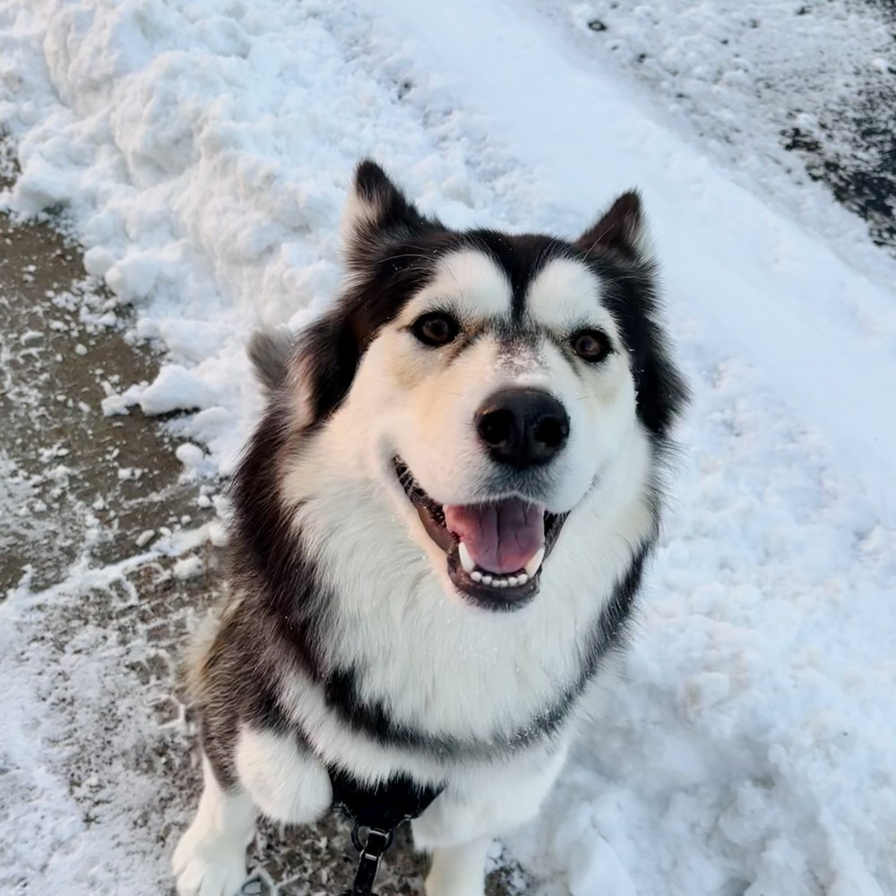
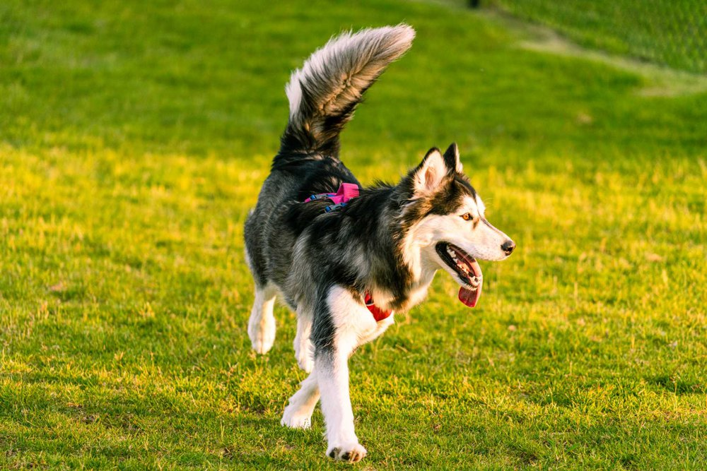
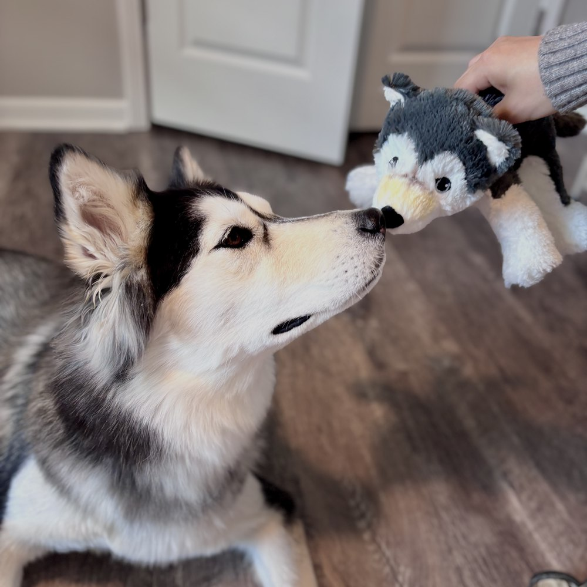
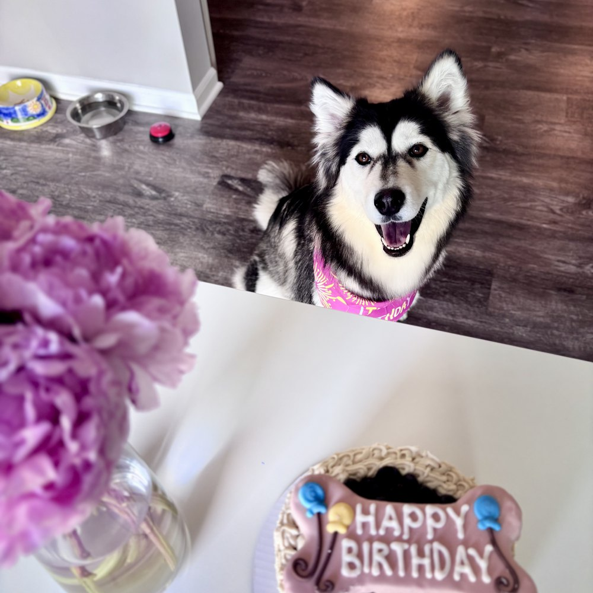

Vanilla 香草
She came home from the humane society in Ann Arbor on 3 January 2026. Nobody knew her real birthday, so she was given a nominal one: 18 June 2024.
Click her. 0 pets
A DNA test puts her at 82% Siberian husky, 10% German shepherd and 8% Alaskan malamute, which mostly explains the coat and the opinions. The 18% does not seem to have changed much.
Her contribution to this thesis has been company and moral support. In the eight months she has been home she has not destroyed a single thing in the house, which for a husky is close to unheard of, and I do not intend to jinx it by writing more about it here.



